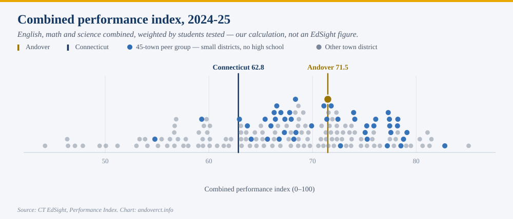
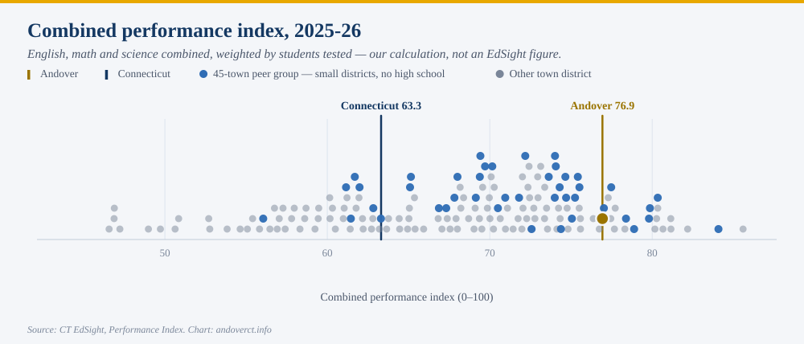
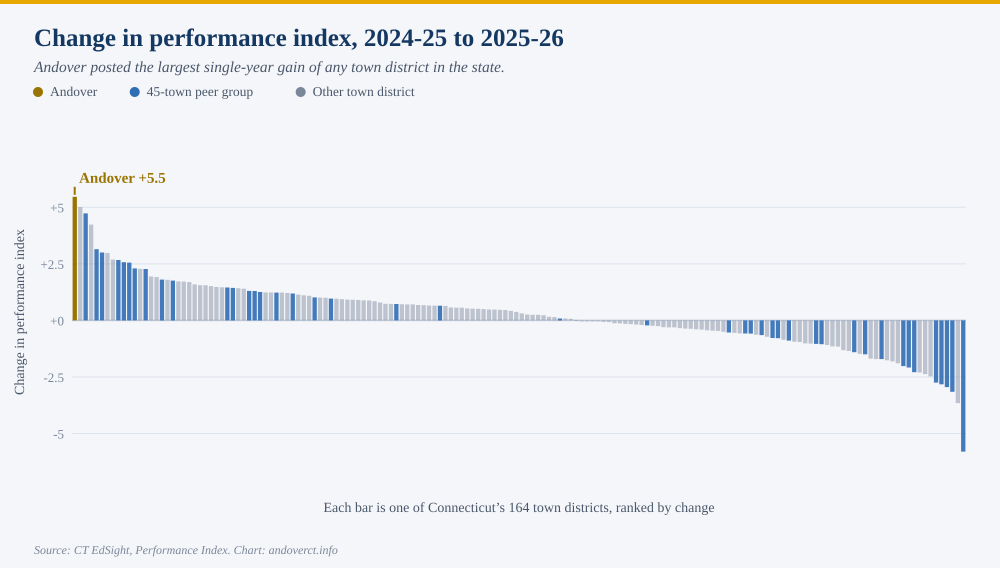
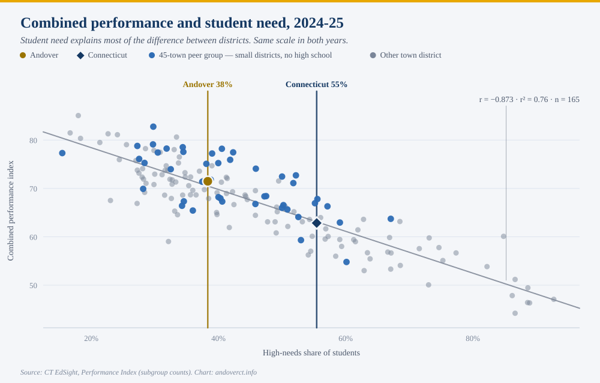
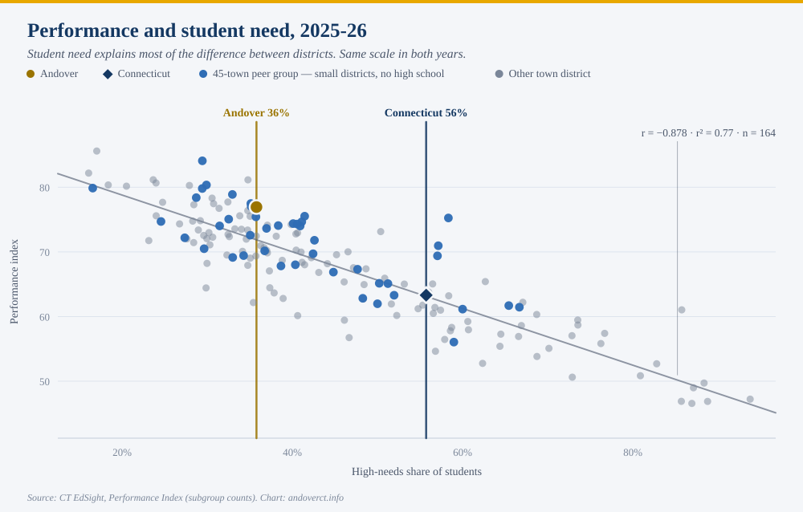
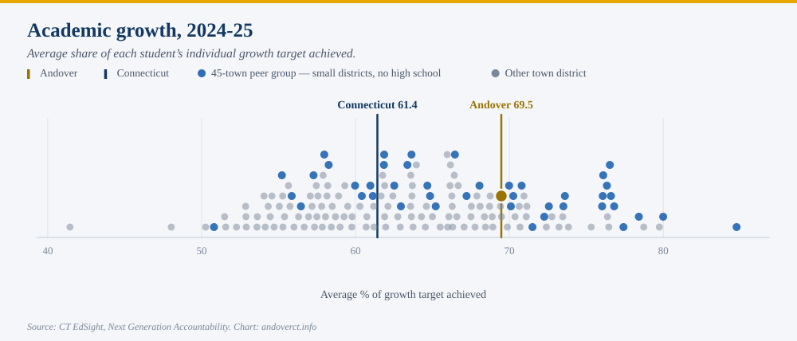
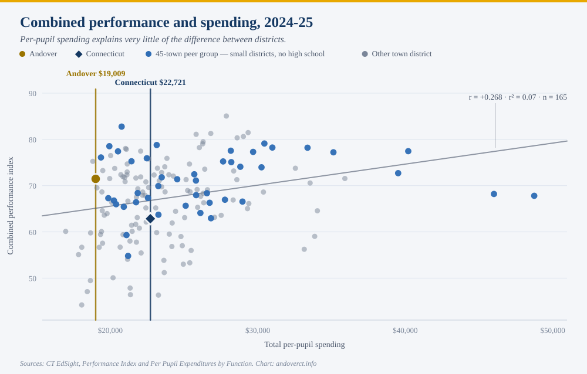
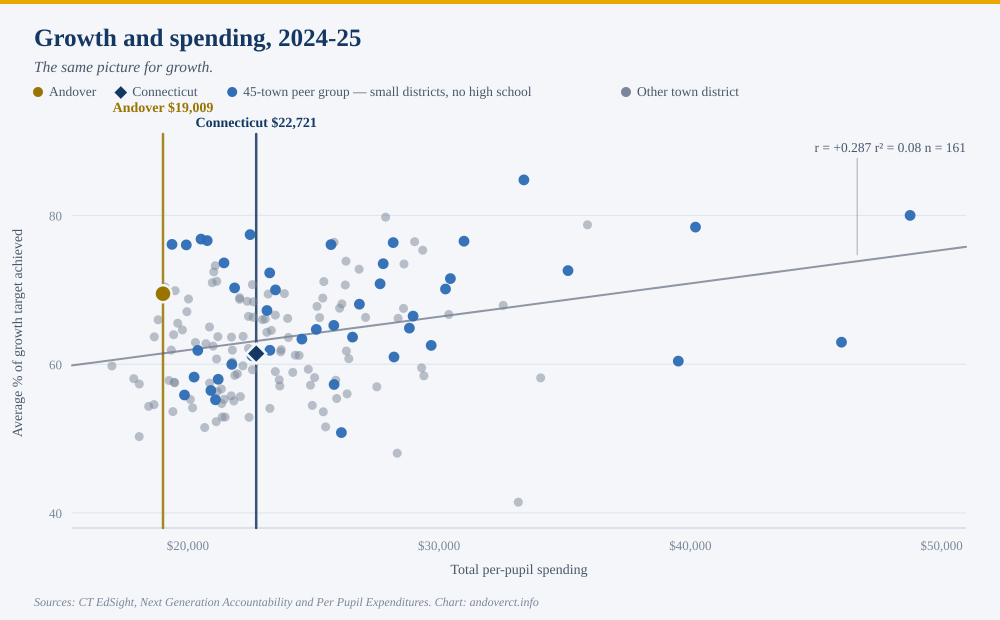
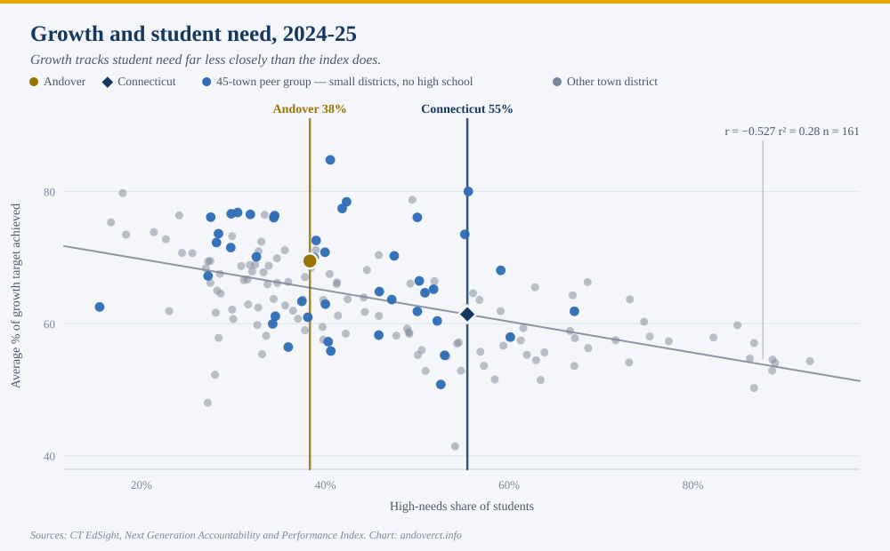

Andover Elementary School's 2025-26 test results are the strongest single-year improvement of any town district in Connecticut. The gain is real, it survives the adjustments that usually explain these things away, and it is one year in a school of about a hundred tested students. Here is the whole picture, including the parts that complicate it.
PLACEHOLDER: opening paragraph keyed to the newspaper article — its headline, its framing, and what it did or did not include. Written once the article runs.
The underlying numbers are public, and they are worth setting out in full, because a result this good invites two opposite mistakes. One is to wave it away as noise or as a demographic accident. The other is to treat a single year as proof of something permanent. Neither is right, and the data is detailed enough to say so precisely.
Everything below comes from the Connecticut State Department of Education's public EdSight system, released in late August.
Connecticut scores every district on a 0-100 performance index. Andover's rose from 71.5 to 76.9.
The performance index is the state's summary of how students did on the annual assessments — Smarter Balanced in English and math, the NGSS science test — placed on a common 0-100 scale so districts can be compared. Connecticut's stated target for every district is 75. Andover is now above it.


Both charts are drawn on the same scale, so the movement is directly comparable. The state as a whole went from 62.8 to 63.3. Andover went from 71.5 to 76.9.
Andover's move is the largest of any town district in the state, and it is not a close call: only six districts gained three points or more, and the next largest gain was 5.0. Fifty-seven percent of districts improved at all.

In Andover's own eleven-year record, no single year has moved this far. The previous best was a three-point gain between 2016-17 and 2017-18.
It is worth being exact about one thing the chart does not say. This is Andover's largest one-year gain, and its best result since 2018-19 — but not its best ever. The district scored 78.8 in 2018-19, before the pandemic. What 2025-26 represents is a return to, and nearly all the way back to, where Andover was before COVID.
English and math both rose sharply. Science fell.
The index combines three subjects, weighted by how many students sat each test. Breaking it apart:
The English and math gains are large and they are what drove the overall number. Science moved the other way. Science is tested only in grades 5, 8 and 11, so in Andover it rests on roughly two dozen students in a single grade — small enough that a few children moving a band or two will swing it several points. It is the least stable of the three figures in either direction, and it should not carry much weight on its own. It is included here because leaving it out would be the kind of selective reporting this series exists to correct.
District test scores mostly measure which students a district serves. Andover's gain survives that adjustment.
This is the single most important thing to understand about school test data, and it is the reason a result like Andover's deserves scrutiny before celebration.
Across Connecticut, the strongest predictor of a district's performance index is not its spending, its size, or its leadership. It is the share of its students who are classified as high needs — eligible for free or reduced-price meals, an English learner, or a student with a disability. That one variable explains about three quarters of the difference between districts.


The relationship is almost exactly as strong in the new year as the old one: r = −0.873 in 2024-25, −0.878 in 2025-26. Every ten percentage points of additional high-needs enrollment is associated with roughly four and a half fewer index points.
So the fair question is not "did Andover's score go up" but "did it go up by more than the change in its students would predict." Andover's high-needs share did fall, from 38.3 percent to 35.8 percent. That accounts for part of the gain — but only part.
Measured against the statewide pattern, Andover went from performing about as expected to performing five points better than expected — the district's strongest showing on that measure since 2018-19.
Andover's raw rank among the state's town districts moved from 61st of 165 to 22nd of 164. Within its own comparison group of small districts without a high school, from 22nd of 45 to 9th of 44.
About a hundred students sit these tests. That cuts both ways.
Andover Elementary tested 109 students in 2025-26. In a district that size, each child is worth roughly a full percentage point of any subgroup figure, and year-to-year results are genuinely volatile: among Connecticut districts testing fewer than 200 students, the typical year-over-year swing is two and a half times that of districts testing 600 or more.
That volatility is exactly why Andover's result is notable rather than routine — a +5.5 is the largest gain even among the small districts, where large swings are most common. But it is also why a single year should not be read as a trend. The honest statement is that Andover has had an excellent year, on top of a long record of performing at or above what its demographics predict, and that one more year of data will say much more than this one does.
The measure that best isolates what a school contributes is not published yet.
The performance index measures where students are. It does not measure how far they moved, and because it tracks so closely with student need, it is a limited tool for judging a school's own contribution.
Connecticut publishes a better measure: academic growth, which matches each individual student to their own prior-year score and asks what share of their personal growth target they achieved. It is far less determined by demographics — student need explains about a quarter of the variation in growth, against three quarters for the index — which makes it the fairer measure of a district's work.
That data, part of the Next Generation Accountability release, is published around November for the preceding school year. The 2025-26 growth figures are not available yet. When they arrive, this page will be followed by a fuller accounting.
On the most recent growth data that does exist, for 2024-25, Andover scored 69.5 against a state figure of 61.4.
The six charts below are the full comparison set for the most recent year in which every measure exists.
Two of them repeat charts from above, at that year, so the set can be read on its own.




Two things stand out in that set, and both are worth stating plainly because they cut against arguments made in every direction locally.
The first is that per-pupil spending barely relates to results at all. Across the state's town districts, spending explains something like seven percent of the difference in the performance index and eight percent in growth — and once student need and grade span are accounted for, no statistically detectable amount. That is not evidence that money does not matter. It is evidence that what varies between Connecticut towns is mostly district size and geography, not educational effort, and that test scores cannot settle a budget argument in either direction.
The second is that growth tracks student need far less closely than the index does. That is the case for paying attention to the November release rather than this one.
PLACEHOLDER: a section responding to specific claims, quotes or framings from the newspaper article and any public reaction to it. Left open deliberately; the factual groundwork above stands on its own.
Every Connecticut town district, every measure · [PLACEHOLDER: link to the fuller interactive report once it is published]
Compiled by Scott Sauyet, Andover, from Connecticut State Department of Education public data. Posted at andoverct.info/the-facts. This page is part of an ongoing series; new editions appear at the same URL as the local conversation evolves. Earlier editions remain accessible at their permanent URLs (use the menu to navigate).